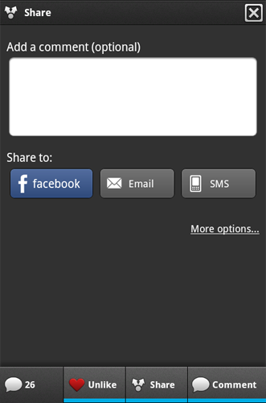
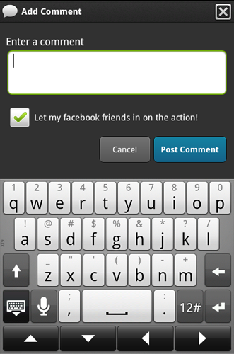

Brand new in v0.7.0 of the Socialize SDK for Android is the “Action Bar” which provides a single
entry point into the entire set of Socialize features.
By default the ActionBar will create a ScrollView to house your existing content.
This is typically necessary so that the ActionBar doesn’t impede the use of your existing content.
If you don’t want your content to be scrollable however, you can disable this feature by using ActionBarOptions
If you need or want to obtain a reference to the ActionBar view at runtime, you can use a creation listener to listen
for the “onCreate” event of the ActionBar:
If the “auto-pin” feature of the Action Bar is not to your liking, or doesn’t play well with your existing layout
you can always just add the view manually.
NOTE: There are some fairly important things the Action Bar expects that you should be aware of:
It MUST be included inside a RelativeLayout. This is because several of the UI features need to be able to slide “over” your existing content.
It MUST be positioned at the bottom of your view.
It MUST be included as the LAST element in your XML layout, otherwise you may get some strange behaviour with layers sliding over/under content.
Here is the recommended way to include the Action Bar in your XML layout:
Socialize Action Bar¶
Brand new in v0.7.0 of the Socialize SDK for Android is the “Action Bar” which provides a single entry point into the entire set of Socialize features.
 Displaying the Action Bar¶
Using socialize.properties configuration¶
Refer to the Getting Started section for details on configuring your socialize.properties file.
Using programmatic configuration¶
If you prefer to do things the old fashioned way, you can set all the parameters programmatically.
Advanced Features¶
Disabling the ScrollView¶
By default the ActionBar will create a ScrollView to house your existing content. This is typically necessary so that the ActionBar doesn’t impede the use of your existing content.
If you don’t want your content to be scrollable however, you can disable this feature by using ActionBarOptions
ActionBar Creation Listener¶
If you need or want to obtain a reference to the ActionBar view at runtime, you can use a creation listener to listen for the “onCreate” event of the ActionBar:
ActionBar Event Listener¶
If you want to attach your own events to user operations on the ActionBar you can bind an OnActionBarEventListener to capture these:
XML Based Layout (Experimental)¶
If the “auto-pin” feature of the Action Bar is not to your liking, or doesn’t play well with your existing layout you can always just add the view manually.
NOTE: There are some fairly important things the Action Bar expects that you should be aware of:
Here is the recommended way to include the Action Bar in your XML layout: